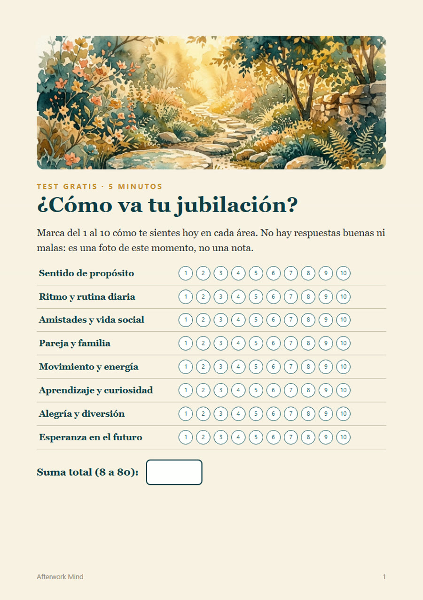

Un test sencillo de 5 minutos. Marcas del 1 al 10 cómo te sientes en 8 áreas de tu vida y descubres cuáles necesitan un poco de cariño, con un paso pequeño para cada una.

Descargar el test gratis (PDF)3 páginas · para imprimir o rellenar en pantalla · sin registro
El primer año de la jubilación es un cuaderno de 30 días para recuperar tu ritmo, tu propósito y tu gente. Una página al día, unos 15 minutos.
Este test es una herramienta de reflexión, no un diagnóstico médico ni psicológico.